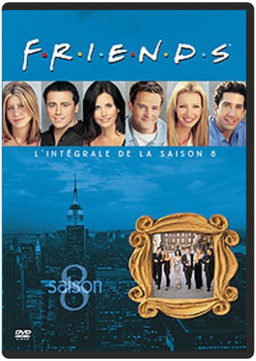

Imaginez que Phoebe devienne courtière en bourse, que Joey ait une liaison avec sa colocataire (Elle McPherson), que Ross couche avec la fille du nouveau flirt de Rachel (Bruce Willis) ou encore que Chandler prenne ses responsabilités en décidant de demander Monica en mariage ! Une saison où le passé refait surface, à l'image de Tom Sellek venu semer le trouble dans l'esprit de Monica ou encore du couple Ross/Rachel qui se réveillent mariés dès le premier épisode avec une sérieuse gueule de bois. Une saison où même le générique change puisque Courtney Cox a exigé de voir le nom de son mari (David Arquette) associé au sien. Ce caprice a été entendu par la production qui s'est empressée de s'exécuter… —Dale Cooper  Le mariage de Chandler et Monica occupe la majeure partie de cette septième saison pimentée des quiproquos et déboires amoureux de Rachel, Joey, Phoebe et Ross, qui jouent aux appartements musicaux. Leurs tentatives pour trouver l'âme sœur se multiplient : sont-ils mus par le désir d'y arriver avant 35 ans ou bien n'est ce que l'envie de "franchir le pas" comme Monica et Chandler ? Beaucoup de souvenirs hantent cette joyeuse saison où l'intimité de chacun prend (un peu) le pas sur l'amitié de tous, où seuls les mariés ont ouvert les yeux sur ce qui les unit. Les autres continuent de chercher ailleurs ce qu'ils ont sous le nez. Pourvu qu'ils ne trouvent pas trop vite est tout ce qu'on leur demande. La fin de cette saison des Friends en annonce une huitième des plus alléchantes. —Aurélie Rochman  friends, saison 8 L'événement majeur de cette saison est sans conteste le bébé de Rachel et de... Ross ! Pourtant, ces deux-là ne sont plus ensemble, et les affaires se compliquent puisque Joey tombe amoureux de Rachel. Entre Ross, père de son enfant, amoureux transi de longue date, et Joey, certes drôle et touchant mais irresponsable, lequel la belle Rachel va-t-elle choisir ? C'est Janice-la-voix-de-crécelle qui fera sans doute pencher la balance, mais le suspense reste entier. Chandler, Monica et Phoebe sont un peu plus en retrait dans une saison où les histoires amoureuses semblent vouloir se concrétiser. Mais pas trop vite, messieurs les scénaristes, pas trop vite ! Laissez-nous encore savourer ces épisodes pleins de quiproquos et au comique irrésistible. Laissez-nous encore soupirer aux amours contrariées de Ross, Rachel, Joey et Phoebe ! Voilà une saison qui prouve qu'on peut imaginer huit années de la vie de six personnes sans jamais lasser les fans, au contraire. Notons les apparitions de guest-stars comme Brad Pitt (M. Rachel à la ville) dans un numéro étonnant et, on l'imagine, totalement à contre-emploi. En attendant la neuvième saison de Friends, on se repasse les huit précédentes ? Oh oui ! ——Aurélie Rochman  Les saisons passent et ne se ressemblent pas chez les Friends new-yorkais. C’est le triangle amoureux impossible amorcé en fin de huitième saison qui est au cœur de cette (déjà !) neuvième saison de Friends. Rachel est apprentie maman et a bien du mal à se décider avec qui faire sa vie. Entre Joey, qui l’a troublée et la trouble encore, et Ross, père de son enfant, il est ardu de choisir, même pour le bien de la petite Emma qui a visiblement hérité du caractère déjanté de ses parents, parrains et marraines ! Monica et Chandler, entre problèmes de boulots et accrochages de couples, veulent passer à l’étape suivante et concevoir un enfant à tout prix. Aimant particulièrement les placards, ils génèrent des quiproquos inénarrables, malgré la tristesse de leur insuccès. Phoebe réalise n’avoir jamais eu de relation sérieuse avec un homme, mais c’est peut être en passe de s’arranger. Avec cette nouvelle saison, un peu stagnante mais fidèle à l’esprit de la série culte, les Friends nous prouvent combien il est difficile de conjuguer amitié indéfectible, amour et vie de famille. Les bases de la dixième et dernière saison sont néanmoins posées. Joey et Rachel vont-ils concrétiser ? Suspense… —Aurélie Rochman |  L'idée d'adapter le roman historique d'Herbert J. Asbury avait germé dans l'esprit de Martin Scorsese dès 1970. En acceptant de financer le projet, Miramax met fin à plus de vingt ans d'atermoiements de production et de tournages sans cesse repoussés. Raconter Gangs of New York relève de l'entreprise périlleuse, tant les pistes narratives se croisent et s'entrechoquent. Pègre, vengeance, rédemption et identité américaine sont autant de thèmes de prédilection pour le réalisateur de Taxi Driver et des Affranchis. Sans oublier bien entendu sa ville fétiche, dans sa version XIXe siècle, le New York des bas fonds du quartier des "five points", une ville-foire dépeinte à l'hémoglobine où l'on s'étripe sans retenue; Une ville-décor d'un réalisme somptueusement cru, mais surtout une ville en recherche de son métissage culturel, terre d'accueil, entre guillemets, d'un flot d'immigrants irlandais aussitôt précipités dans une guerre de sécession interminable. Au delà de New York, c'est bel et bien un bout d'histoire de l'Amérique que Martin Scorsese, en bateleur virtuose, nous conte : une histoire bâtie sur la violence, la peur de l'autre, la corruption, la xénophobie et la politique spectacle, un mythe tout entier incarné par l'ombrageux et folklorique Bill "The Butcher", sorte d'Attila déguisé en bouffon magnifique et interprété par un Daniel Day-Lewis au sommet de son art. —Arnaud Caire  Huitième réalisation de Jim Jarmusch, Ghost Dog possède le magnétisme hypnotique de son précédent film, Dead Man. En racontant les dernières heures d'un tueur black – incarné par un Forest Withaker jamais vu dans un tel état de grâce depuis Bird – poursuivi par ses anciens commanditaires mafieux, qui travaille et vit comme un samouraï, au corps lourd et massif mais filmé léger et aérien, ce film présenté au Festival de Cannes 1999 s'apparente à une variation jazzy-rap d'un bon vieux film noir. À l'image de son héros qui communique par pigeon voyageur tout en écoutant du rap – mention spéciale à la BOF de RZA, pilier du groupe rap Wu Tang Clan – sur les autoradios les plus hype, le réalisateur de Down by law filme un pied dans le passé, l'autre dans le présent le plus actuel. D'où cette tonalité drôle et mélancolique, jamais ironique. Et d'où aussi le thème récurrent de la transmission, magnifiquement symbolisé par le pigeon voyageur, mais aussi par un livre qui circule de main en main, comme un témoin entre les générations. Mélange élégant de trois figures que tout éloigne, le mafioso, le rapper et le samouraï, Ghost Dog est une superbe réussite de l'auteur de Stranger Than Paradise. —Sylvain Lefort  Quick Shipping !!! New And Sealed !!! This Disc WILL NOT play on standard US DVD player. A multi-region PAL/NTSC DVD player is request to view it in USA/Canada. Please Review Description. |

Julien
Collection Total:
2 053 Items
2 053 Items
Last Updated:
May 23, 2024
May 23, 2024


 Made with Delicious Library
Made with Delicious Library